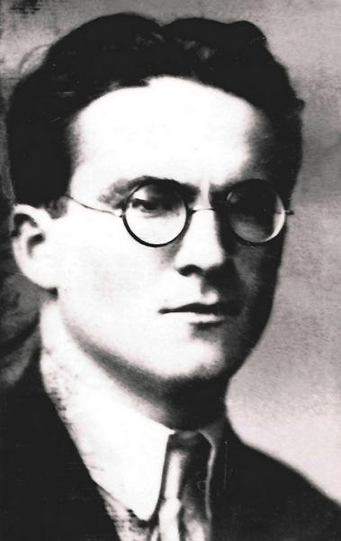
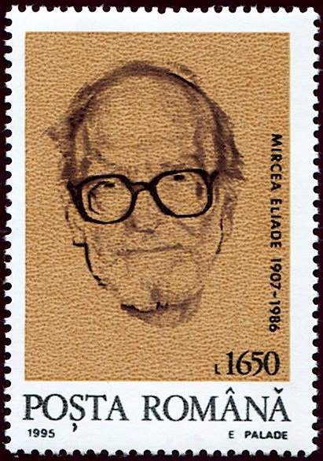

Hierofanie
Actul prin care sacrul se arată: o piatră, un copac sau un loc încetează să mai fie obișnuite, pentru că acolo s-a arătat ceva cu totul diferit.
Și-a petrecut o viață întreagă întrebându-se de ce oamenii de pretutindeni își construiesc calendare, temple și povești în jurul sacrului.

Născut9 martie 1907
București, România. Elev precoce, publica eseuri și proză încă din adolescență.
Decedat22 aprilie 1986
Chicago, Statele Unite, unde a predat timp de trei decenii.

Catedra de la Chicago1957-1986
De la numirea sa la Universitatea din Chicago, a deținut catedra de istoria religiilor și a format o generație de cercetători americani în domeniu.
Redactor-șefEncyclopedia of Religion, șaisprezece volume
A coordonat lucrarea de referință a domeniului, dusă la capăt de colegii săi și publicată în 1987, la un an după moartea sa.
În mii de pagini, câteva concepte fac aproape toată munca. Patru dintre ele sunt aici. Glosarul complet are zece.
Actul prin care sacrul se arată: o piatră, un copac sau un loc încetează să mai fie obișnuite, pentru că acolo s-a arătat ceva cu totul diferit.
Două moduri de a locui lumea. Unul este omogen și neutru. Celălalt este plin de rupturi, praguri și centre.
Societățile arhaice vindecă teroarea istoriei repetând faptele zeilor și regenerând timpul însuși prin ritual.
Centrul lumii: muntele, templul sau stâlpul unde se întâlnesc cerul și pământul și unde sacrul irumpe.
Glosarul complet, de la hierofanie la coincidentia oppositorum
„Omul devine conștient de sacru pentru că acesta se manifestă, se arată, ca ceva cu totul diferit de profan.”
Sacrul și profanul, 1957
Șase titluri care acoperă, împreună, savantul și romancierul. Lista completă are datele primei publicări și titlurile originale.
Cea mai citită carte a sa: o scurtă introducere în cele două moduri de a fi în lume.
Cum desființează societățile arhaice timpul profan, repetând faptele primordiale ale zeilor. Ediția engleză a apărut și ca Cosmos and History.
Cartea care a făcut din extaz o categorie centrală a studiului religiei.
Sinteza sa târzie a întregului domeniu, din epoca de piatră până în zorii modernității, în trei volume.
Romanul autobiografic al iubirii sale din Calcutta. Eroina sa i-a răspuns în propriile memorii, patruzeci de ani mai târziu.
Romanul exilului, scris la Paris: destinul unui om, o iubire pierdută și un continent care se scufundă în istorie.
Trei puncte de intrare cinstite, în funcție de cât timp ai.
Începe aici
Cartea scurtă în care întregul său proiect se vede dintr-o dată și cea mai ușor de citit dintre lucrările sale.
Apoi
Ce fac miturile în culturile vii și de ce politica și divertismentul modern se comportă încă mitic.
Pentru romancier
Romanul autobiografic al anilor petrecuți la Calcutta, scris aproape de evenimente.